Vertical machining center YCM MV106A BT40
Meja 1.120 × 600 mm · spindle 10.000 rpm
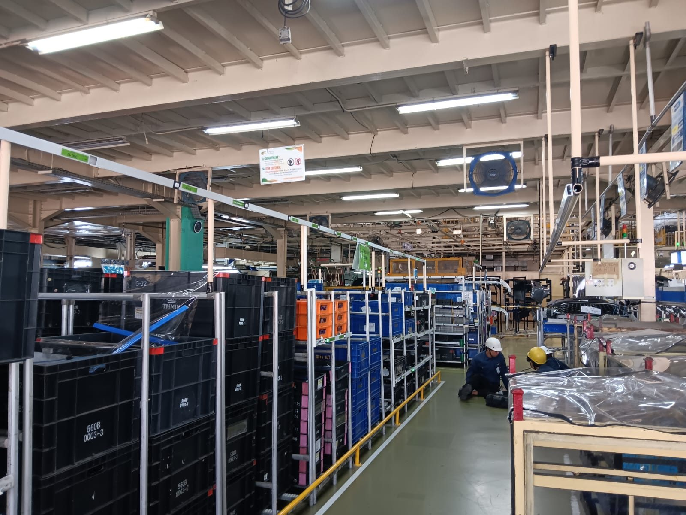
Engineering · Machining · Precision Tools · Fabrication · General Supply
ARASI mendukung kebutuhan manufaktur melalui pengadaan komponen dan perlengkapan industri, perancangan dan pembuatan peralatan produksi, serta integrasi sistem otomasi sesuai kebutuhan operasional pabrik.
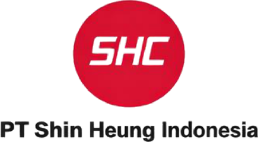
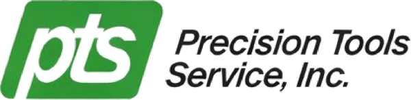
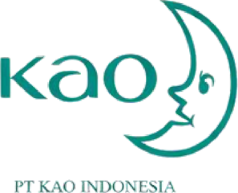
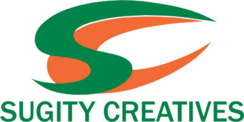
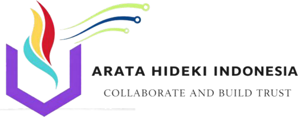
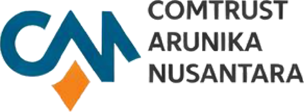
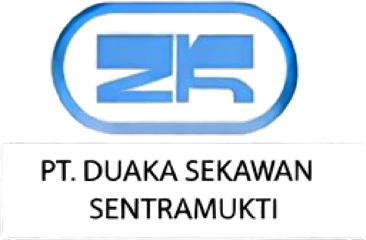
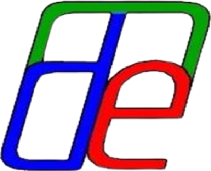
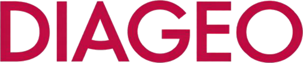
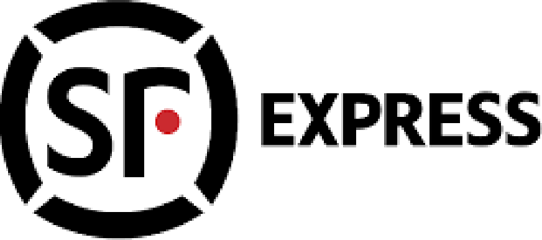
Industrial Supply
Penyediaan komponen, suku cadang, alat pelindung kerja, instrumen pengujian dan pengukuran, serta perlengkapan operasional industri.
Precision Tooling & Fabrication
Perancangan dan pembuatan precision tools, jig, fixture, serta peralatan untuk mendukung proses perakitan dan pemindahan material.
Industrial Automation
Rekayasa dan integrasi mesin, sistem, proses, serta data sesuai kebutuhan otomasi di lini produksi.
Mesin di workshop Cikarang Selatan yang dipakai untuk machining part, jig, dan dies.
Meja 1.120 × 600 mm · spindle 10.000 rpm
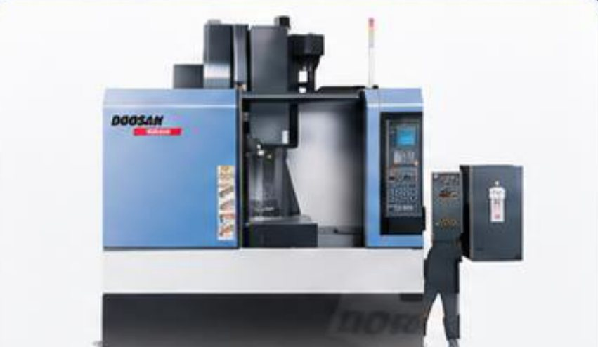
Meja 500 × 1.000 mm
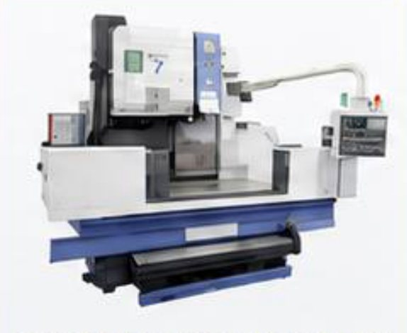
Meja 700 × 1.500 mm
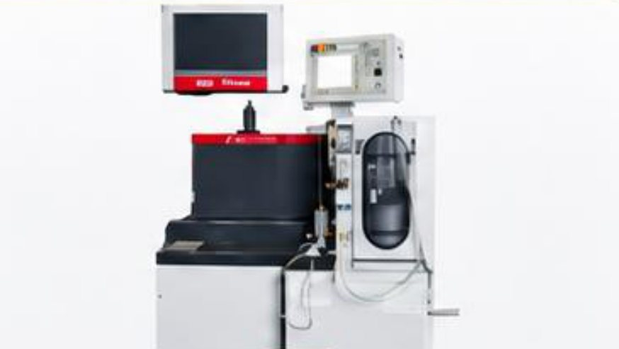
Benda kerja maks. 500 kg · meja 540 × 430 mm · X320 Y250 Z220 mm
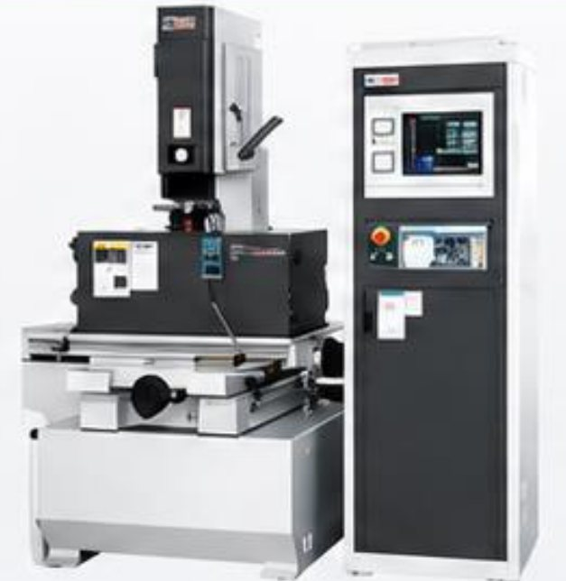
Meja 700 × 400 mm · beban meja 1.500 kg · elektroda maks. 100 kg · X400 Y300 mm
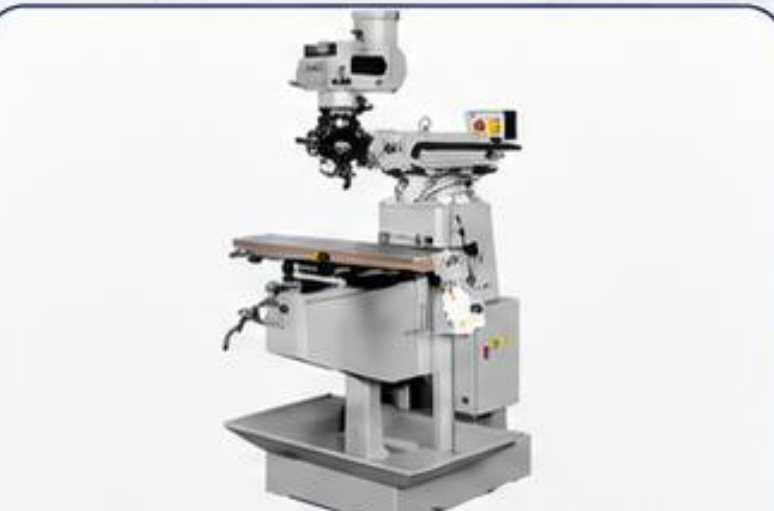
Meja 1.270 × 254 mm · travel 780 × 410 × 450 mm
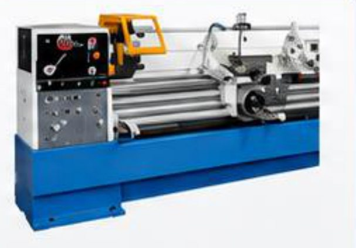
Meja kerja 530 × 1.100 mm
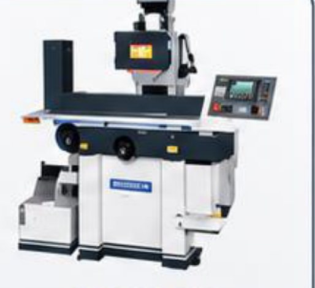
Penggerindaan permukaan presisi
Sistem yang sudah kami rancang dan pasang di lini produksi klien.
Solusi rekayasa presisi terintegrasi mulai dari perancangan model 3D CAD hingga proses pemesinan dan perakitan aktual.
Suku cadang, perkakas, dan komponen untuk operasional serta pemeliharaan peralatan industri.
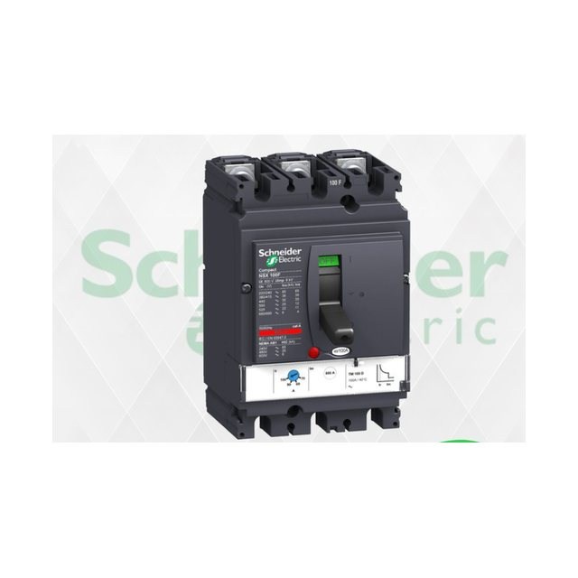
Komponen listrik dan kontrol: circuit breaker, kontaktor, relay, push button, sensor, dan HMI.
Minta penawaran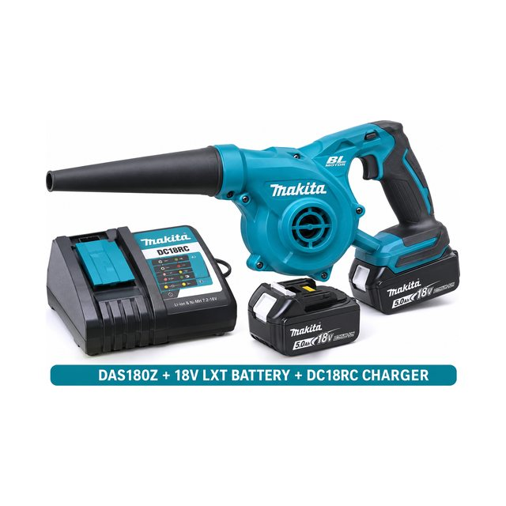
Perkakas tangan, cordless power tools, dan toolkit untuk workshop serta lini perakitan.
Minta penawaran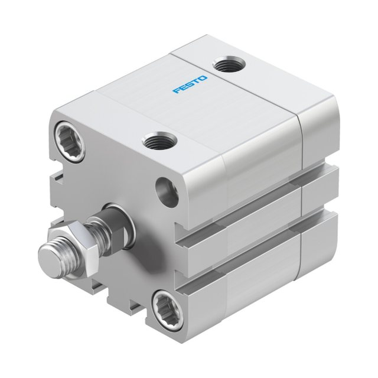
Silinder, valve, pompa hidrolik, filter udara, dan komponen sistem perpipaan.
Minta penawaran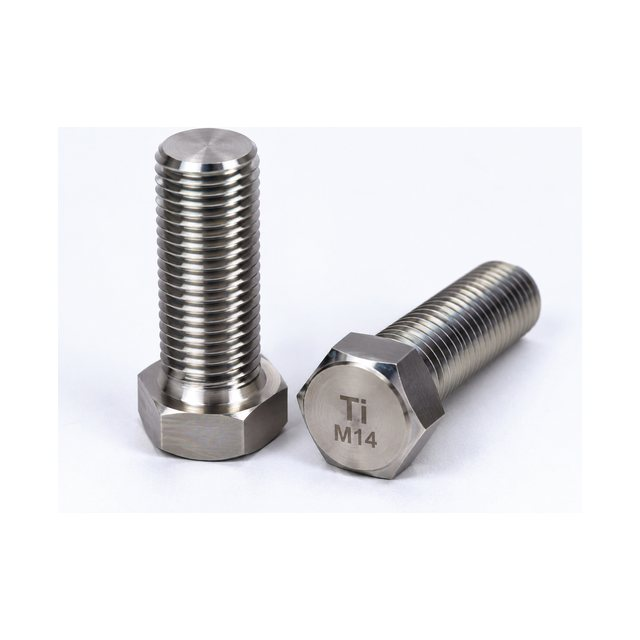
Part custom presisi, dies, punch tooling, dan komponen mekanikal sesuai gambar Anda.
Minta penawaranMemahami karakter komponen, mesin, dan cara operator bekerja di shop floor.
Memilih mekanisme dan otomasi sesuai kebutuhan proses, tanpa biaya yang tidak perlu.
Desain berdasarkan toleransi, fungsi mekanik, dan posisi komponen yang konsisten.
Menjaga komitmen jadwal dan integritas untuk pelanggan baru maupun lama.
Dari asesmen, desain 3D, machining, perakitan, sampai komisioning di pabrik Anda.
“Tingkat misposisi berkurang drastis dan setup time menjadi jauh lebih cepat sejak menggunakan jig buatan Arasi.”
“Solusi jig nesting dari Arasi presisi dan konsisten memenuhi standar inspeksi CMM kami.”
“Pengerjaan cepat, dan tim engineering Arasi responsif datang langsung ke pabrik saat asesmen dan trial fitting.”
“Integrasi pneumatic clamping dan safety interlock membuat proses operasi jauh lebih aman bagi operator lini.”
Belum terjawab? Tanyakan langsung ke tim kami.
Kirim gambar teknik (2D CAD / 3D model) atau sampel komponen. Tim engineer kami mengkaji kebutuhan proses dan fungsi clamping, lalu mengajukan konsep desain 3D beserta estimasi biaya dan durasi pengerjaan sebelum produksi disetujui.
Toleransi pengerjaan hingga ±0.01 mm, tergantung fungsi part dan material. Material disesuaikan dengan beban dan keausan, misalnya baja perkakas SKD11, S45C/S50C, aluminium 6061/7075, dan POM untuk bagian yang tidak boleh menggores, ditambah perlakuan panas atau hard-chrome bila perlu.
Ya. Tim engineer bisa dijadwalkan ke kawasan industri Cikarang (GIIC, EJIP, MM2100, Jababeka), Karawang (KIIC, Suryacipta), Bekasi, dan Jabodetabek untuk pengukuran stasiun kerja dan diskusi spesifikasi.
Setiap jig dan sistem otomasi diuji di workshop: verifikasi dimensi, uji fungsi siklus pneumatik dan sensor, lalu diserahkan bersama laporan inspeksi dimensi.
Ya. Kami menyediakan suku cadang seperti silinder pneumatik, linear guide, servo motor, dan sensor, sekaligus melayani retrofit mesin lama, perpanjangan conveyor, dan penambahan poka-yoke di lini yang sudah berjalan.
Catatan teknis dari pengalaman tim engineering di lapangan.

Geometri dudukan dan dual pneumatic clamping untuk mencegah lembaran logam bergeser.
Baca selengkapnya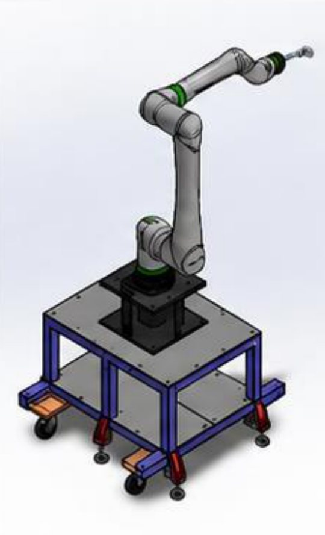
Sinkronisasi sensor, interlock, dan robot controller agar lini perakitan aman.
Baca selengkapnya
Pelumasan seal, filter regulator, dan pemilihan sensor proximity tahan getaran.
Baca selengkapnyaKirim gambar teknik, sampel, atau ringkasan masalah di lini. Tim engineering kami meninjau, lalu menjadwalkan survei ke pabrik bila diperlukan.